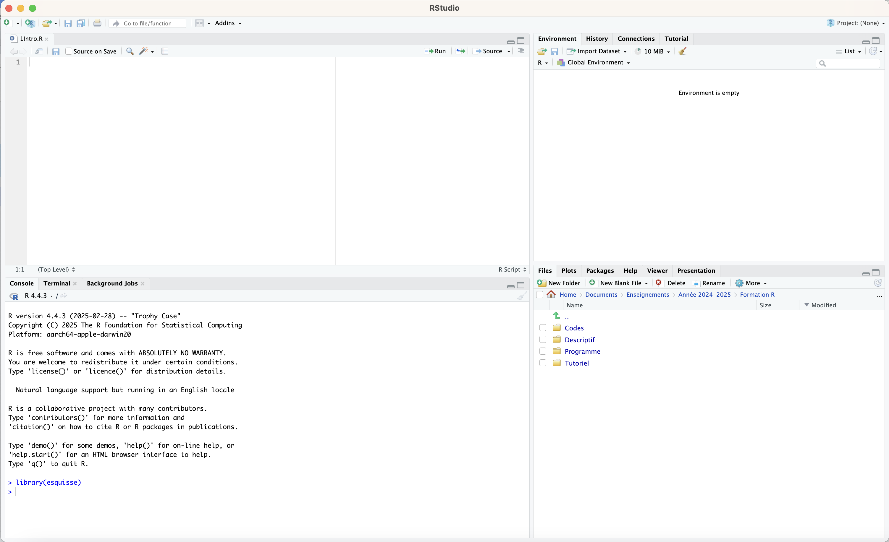
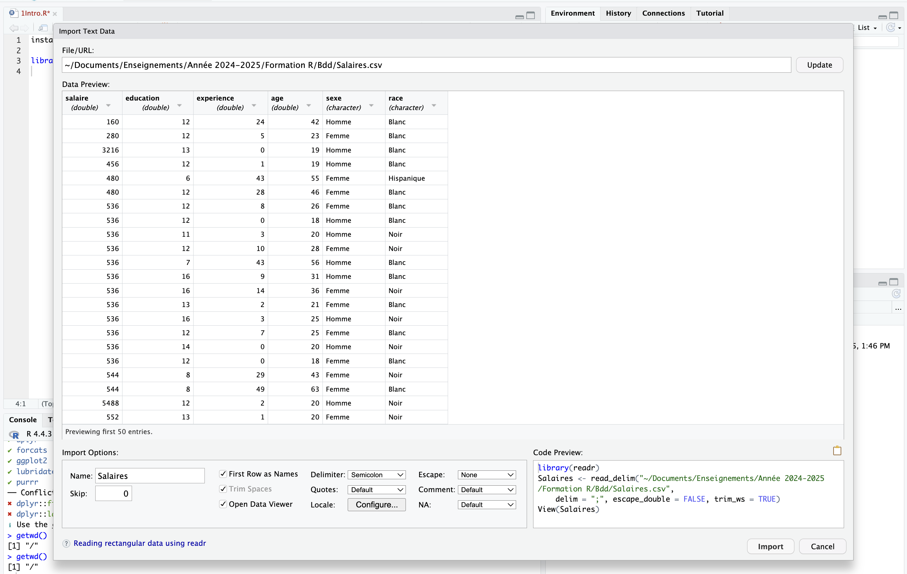
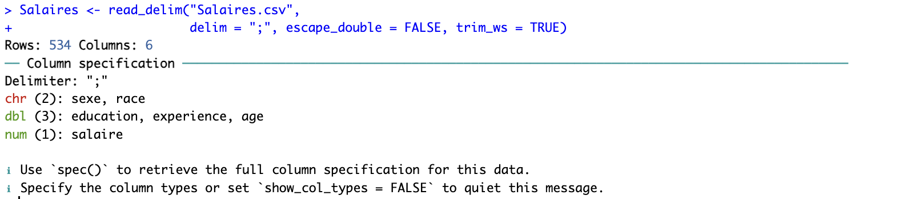

install.packages("tidyverse")
library(tidyverse)1 Introduction
1.1 Installer R et RStudio
On commencera d’abord par installer R suivant la configuration de sa machine, à partir des liens disponibles sur le Comprenhensive R Archive Network (CRAN).
On installera ensuite RStudio en se rendant sur cette page. RStudio est un “Integrated Development Environment (IDE)”, c’est à dire qu’il s’agit d’un logiciel offrant une interface conviviale pour travailler avec le langage de programmation R. Notons qu’il est possible d’utiliser d’autres logiciels d’interface, mais RStudio est sans doute le plus utilisé actuellement.
Si pour une raison ou une autre, il n’est pas possible d’installer R / RStudio sur sa machine, on peut, temporairement (parce qu’on ne recommande pas de mobiliser un serveur privé pour stocker des données sensibles), utiliser R / RStudio en ligne en se créant un compte sur le “Posit cloud”.
Une fois qu’on a installé R et RStudio, on peut directement ouvrir RStudio qui va afficher une jolie console (à l’exception qu’ici, j’ai déjà créé un script R en cliquant sur la petite flèche blanche sur fond vert que j’ai enregistré dans sous le nom 1Intro.R, ce que vous devez faire également).
1.2 R, RStudio et le tidyverse
On pourra se reporter à la petite présentation de R, RStudio du tidyverse réalisée par Julien Barnier. Rappelons ici que R est un langage de programmation développé depuis les années 1990, dérivé du langage S, et dont on retrouve certaines proximités avec le langage C. Il est libre et gratuit.
Parmi les multiples forces de R, on notera notamment sa communauté d’utilisateur·ices qui peuvent aussi jouer le rôle de développeur·euses. R est ainsi doté de nombreuses extensions sous la forme de “fonctions”, stockées dans des “packages” (ou bibliothèques), qui facilitent grandement son utilisation. La liste des packages disponibles sur le CRAN (mais on peut aussi mobiliser des packages qui ne sont pas sur le CRAN) est disponible ici : https://cran.r-project.org/web/packages/.
Avec plus de 22 000 packages, on s’y perd assez vite. On propose tout au long de ce guide ici d’utiliser quelques packages considérés comme facilitant la vie pour réaliser des statistiques pour les sciences sociales. Là encore, il ne s’agit pas d’être exhaustif, ni d’imposer quoi que ce soit. La particularité de R est qu’il est souvent possible de faire la même chose en mobilisant des opérations / fonctions / packages différents. À chacun de trouver ses petits “trucs” !
Le package tidyverse comprend en fait une suite de packages conçus pour fonctionner ensemble et qui facilitent la manipulation, le recodage et la production de graphiques par rapport au language “base R”. On va ici s’appuyer dessus pour une partie de nos manipulations.
Note
On a besoin d’installer les packages qu’une seule fois, en revanche, il faut charger son package utilisé à chaque nouvelle ouverture d’une session R. Ainsi, si vous refermez RStudio puis le réouvrez, pas besoin de refaire tourner install.packages(“tidyverse”), mais pour utiliser les fonctions de cette extension, il faut quand même appeler tidyverse en faisant tourner library(tidyverse).
L’appel des packages pertinents se fait généralement systématiquement au début du script.
1.3 RStudio comme outil de travail
De base, la console se présente sous la forme de quatre panneaux :
Le premier en haut à gauche correspond au fichier du script R, qui pour l’instant est vide (ou presque vide, si vous avez déjà copié-collé les lignes de code pour installer et ouvrir tidyverse). C’est ici que nous écrirons nos lignes de commande que nous ferons tourner, soit en cliquant sur Run, soit en utilisant le raccourci clavier Cmd + Entrée (ou Contrôle + Entrée).
Le second en bas à gauche correspond à la console, pour l’instant, elle nous informe juste qu’elle a chargé R dans la version la plus à jour trouvée sur mon ordinateur (4.4.3). Dans la console apparaitront les commandes que nous avons fait tourné et les messages renvoyés par R à cette occasion.
Le troisième en haut à droite correspond à plusieurs onglets. Le plus important correspond à l’Environment, qui nous indique tous les objets créés dans la session dans laquelle nous nous trouvons (des dataframes, des listes, des vecteurs….).
Le quatrième en bas à droite comprend également plusieurs onglet, dont Files - qui permet de naviguer dans l’arborescence de son ordinateur -, Plots - où s’afficheront nos magnifiques graphiques, Packages - qui indique les packages (les librairies) installées sur notre ordinateur et celles qui sont chargées dans la session actuelle (elles sont cochées), Help - où s’affiche les informations sur une fonction quand on tape dans la console ?nom_de_la_function, Viewer - où apparaitront nos jolis tableaux.

Caution
Au moment de quitter RStudio, il est possible qu’une fenêtre apparaisse demandant si on veut “Save the workspace image…”. Et en fait ce n’est pas une bonne idée de cliquer sur Save !
Car cela enregistre l’ensemble de l’espace de travail (la session) qui sera réouverte automatiquement en réouvrant RStudio, et on peut se retrouver avec des objets non pertinents pour une session ultérieure (et qui peuvent se retrouver en conflit les uns avec les autres).
On poura suivre Julien Barnier qui propose de désactiver l’apparition de cette fenêtre pop-up : https://juba.github.io/tidyverse/05-organiser.html#d%C3%A9sactiver-la-sauvegarde-de-lespace-de-travail.
Si on n’a pas cliqué sur Save, une réouverture de RStudio réinitialise la session R. Pour être sur que c’est bien le cas (vider le global environment, les packages chargés, réinitialise la mémoire…), on pourra écrire dans la console :
.rs.restartR()1.4 Charger des données dans R
Pour faire des stats, il nous faut des données. Commençons par les charger dans notre espace de travail. Pour ce faire, trois solutions :
- On peut dans le panneau en bas à droite naviguer dans l’arborescence des dossiers pour trouver le fichier adéquat, cliquer dessus et une fenêtre apparait, permettant de formater le fichier avant de le charger dans l’espace de travail.
- On peut cliquer sur Import Dataset dans l’onglet en haut à droite, puis cliquer sur Browse et naviguer dans le Finder ou l’Explorateur.
- On peut directement avoir recours à des lignes de code mises dans son script pour charger son fichier.
La deuxième solution est préférable, dans un souci de reproductibilité de son code. Mais la première ou la seconde ont l’avantage d’être plus facile quand on n’est pas familier du code, d’autant que ces solutions “clic-souris” ont l’avantage de proposer les lignes de code correspondantes qu’on peut recopier dans son script pour la prochaine session de travail !
Ici, nous allons mobiliser une base de données appelée “Salaires.csv” qui porte sur les niveaux de salaire de plusieurs centaines d’Américains en 1991 (dont la provenance n’est pas bien établie, mais ce n’est pas grave, ce sont juste des données pour l’exemple).

Un mot sur les trois lignes de code que nous avons copié :
library(readr)
Salaires <- read_delim("~/Documents/Enseignements/Année 2024-2025/Formation R/Bdd/Salaires.csv",
delim = ";", escape_double = FALSE, trim_ws = TRUE)
View(Salaires)La première (library(readr)) n’est pas totalement utile car elle charge le package readr qui permet d’utiliser la fonction read_delim. Or, le package readr s’est en fait déjà chargé quand nous avons chargé l’extension tidyverse.
La troisième View(Salaires) peut également être enlevée, c’est une fonction qui permet de pré-visualiser la base de données dans un nouvel onglet (la garder peut être embêtant si on fait tourner une série de lignes de codes d’un coup).
La deuxième ligne de code appelle la fonction read_delim, avec l’argument du chemin complet où se trouve l’objet (ce chemin est a priori différent sur votre machine…), un argument spécifiant la manière dont les colonnes du fichier csv sont délimitées (par des points-virgules), l’argument escape_double=FALSE porte sur la manière de lire les colonnes (dans le cas où il y aurait eu des doubles ““, mais ça n’a aucune incidence ici), et l’argument trim_ws=TRUE enlève automatiquement les espaces vides dans les colonnes avant et après chaque chaine de caractères.
Le résultat de la fonction read_delim est sotcké (grâce à l’opérateur “<-”) dans l’objet Salaires. Ici, on a appelé la base dans R du même nom que celui du fichier csv, mais rien n’empêche de l’appeler par un autre nom, bdd, ou bidule, ou us, etc.
Si tout s’est bien passé, la base apparait maintenant dans l’environnement (onglet en haut à droite).
Noter qu’on aurait pu écrire cette ligne en deux temps :
setwd("~/Documents/Enseignements/Année 2024-2025/Formation R/Bdd")
Salaires <- read_delim("Salaires.csv",
delim = ";", escape_double = FALSE, trim_ws = TRUE)Dans cette version, on indique d’abord à R quelle est le chemin où se trouve le fichier à lire avec la fonction setwd() qui signifie “set the working directory”, et dans un deuxième temps, on charge la base de données. Cette solution est avantageuse si on veut charger plusieurs bases de données en même temps dans son environnement qui sont stockées dans le même dossier local. Car oui, il est possible de charger plusieurs bases de données en même temps !
Si on choisit de charger sa base de données directement par les lignes de code, on peut récupérer le chemin dans son Finder ou son Explorateur de fichiers en cliquant-droit sur le fichier csv, puis Propriétés ou Lire les informations.
Noter que pour vérifier vers quel dossier R pointe actuellement, on peut utiliser la fonction getwd().
1.5 Décrire sa base de données
Formellement, comme nous utilisons l’extension tidyverse, notre base de données est maintenant un “tibble” (un format un peu plus intelligent, sinon par défaut dans R, les base de données sont des data.frame). Lors du chargement, la console nous dit que la base contient 534 lignes, 6 colonnes, de différents types (character pour le sexe et la race, dbl ou double pour education, experience, age, et num ou number pour salaire). Il n’y a pas vraiment de différence qui nous préoccupe entre double et number (ce sont des variables quantitatives).

Plusieurs manières de mieux décrire sa base de données peuvent être utiles :
On peut écrire le nom de la base de données Salaires dans la console, ce qui va afficher les 10 premières lignes de la base de données
On peut aussi écrire str(Salaires) pour appréhender la structure du jeu de données
On peut aussi écrire summary(Salaires) pour avoir un résumé des variables quantitatives du jeu de données
1.6 Quelques fonctions de manipulation de ses données
1.6.1 Accéder à une variable
Le jeu de données est donc composé de 6 variables. Pour accéder à une variable, par exemple la variable salaire, on peut taper :
Salaires$salaireLe signe $ indique qu’on vient s’intéresser à la variable salaire contenue dans la base Salaires. Cette commande nous sort un vecteur (vector) des valeurs de la variable.
Dans le tidyverse, on appelle les objets grâce à des pipes (des tuyaux), qui prennent deux opérateurs différents (et largement équivalents) : %>% et |>. On cherchera à privilégier le second.
Par exemple, pour calculer la moyenne des salaires on écrira :
Salaires |> summarise(mean(salaire))summarise est la fonction qui permet de résumer la base de données suivant la fonction indiquée. Notons qu’on aurait pu écrire :
Salaires |> summarise(Moyenne=mean(salaire))Pour travailler sur le logarithme des salaires plutôt que sur les salaires, on pourra créer une nouvelle variable dans la base Salaires comme ceci :
Salaires <- Salaires |> mutate(salaire_log=log(salaire))mutate est la fonction qui permet de transformer les variables de sa base de données. Attention à bien assigner les changements de sa base de données dans un objet (ici, le même à savoir la base de données Salaires).
1.6.2 Sélectionner des colonnes
Pour créer une base de données nommée Sal2 où on ne sélectionne que les variables salaire, sexe et âge, on écrira :
Sal2 <- Salaires |> select(salaire,sexe,age)select permet de sélectionner des colonnes.
On peut aussi choisir d’enlever des colonnes, par exemple, si on veut toutes les variables de Salaires sauf age et sexe :
Sal3 <- Salaires |> select(-c(age,sexe))1.6.3 Sélectionner des lignes
Pour créer une base de données à partir de Salaires nommée Salh où on ne travaille que sur les hommes qui ont un salaire supérieur à la moyenne des salaires dans l’échantillon étudié, on écrira :
Salh <- Salaires |> filter(sexe=="Homme" & salaire > mean(salaire))filter permet de sélectionner les lignes de la base de données suivant une certaine condition. L’opérateur de l’esperluette & signifie “et”. Si on veut utiliser l’opérateur logique ou, on écrit : |.
Si on veut sélectionner les individus de race Hispanique et Noir :
Salmin<- Salaires |> filter(race %in% c("Hispanique","Noir"))1.6.4 Renommer une variable
Si on veut renommer dans Salaires la variable sexe et l’appeler genre :
Salaires <- Salaires |> rename(genre=sexe)Dans la fonction rename, on place le nouveau nom, le signe égal, puis l’ancien nom de la variable.
1.7 Sauvegarder ses données
Pour sauvegarder ses données, plusieurs solutions.
1.7.1 Les formats natifs R
- On peut sauver ses données en format .RData. C’est le plus simple, pas de prise de tête et l’avantage c’est qu’on est sur de conserver le format des variables, les labels (on en reparle plus tard), etc.
save(Salaires,file="Salaires.RData")On n’oubliera pas avant d’utiliser cette fonction d’utiliser setwd(“chemin du dossier où on enregistre son fichier”) pour indiquer où enregistrer son fichier (où à tout le moins de vérifier que R pointe bien vers le dossier que l’on souhaite grâce à la commande getwd()).
À noter que le format RData permet tout à fait d’enregistrer plusieurs objets R dans un même fichier :
save(Salaires,Salmin,file="Sal.RData")Pour réouvrir un fichier .RData, il suffit d’écrire :
load("Sal.RData")Le défaut du format .RData est que comme il y a potentiellement plusieurs objets dans le fichier, qu’on ne sait pas comment ils s’appellent et qu’on ne peut pas directement assigner un nom de fichier par défaut à l’ouverture dans la console R, et bien cette méthode peut parfois être risquée (imaginons qu’on ait un fichier Sal.RData qui contienne Salaires et Salmin, mais que dans notre environnement nous ayons déjà un fichier Salmin, en ouvrant Sal.RData, on va écraser le fichier existant).
Pour cette raison, des bases de données peuvent être enregistrées individuellement en utilisant le format .rds avec des fonctions spécifiques :
saveRDS(Salaires, "Salaires.rds")En ouvrant un fichier .rds, on contrôle explicitement le nom qu’on va lui attribuer dans l’environnement R :
Bidule <- readRDS("Salaires.rds")1.7.2 Le format csv
- Toutefois, on a parfois besoin d’exporter ses données en format csv par exemple. On utilisera alors des fonctions du package readr, write_csv (pour utiliser des séparateurs de colonne avec virgule et décimales avec points) ou write_csv2 (séparateur colonne avec point-virgule avec décimales à virgule).
Le format csv avec séparateur virgules est le standard international des csv anglais, qui est formaté facilement quand son Excel est configuré en anglais :
write_csv(Salaires, "Salaires.csv")Le format csv avec séparateur points-virgules est le format csv “français”, et permet directement d’ouvrir de manière adéquate son excel dans son Excel configuré en français :
write_csv2(Salaires, "Salaires.csv")1.7.3 Les autres formats
- Si on souhaite enregistrer son fichier directement comme un fichier excel, c’est également possible. Au moins deux packages permettent de le faire, writexl et openxlsx. Si on installe openxlsx (install.packages(“openxlsx”)) :
library(openxlsx)
write.xlsx(Salaires, "Salaires.xlsx")Si on souhaite lire un fichier excel, on peut utiliser read.xlsx du même package, ici l’argument sheet=NULL indique qu’on lit tous les onglets du fichier excel s’il y en a plusieurs :
read.xlsx("Salaires.xlsx", sheet = NULL)- Parfois, on travaille avec des collègues qui travaillent sur d’autres logiciels propriétaires payants (quelle idée !). En ce cas, on aura recours au package haven, qui permet de sauvegarder des données en format SAS, SPSS ou Stata :
library(haven)
write_dta(Salaires, "Salaires.dta")
write_sas(Salaires, "Salaires.sas7bdat")Attention, en format SAS, se pose la question de la conversion des étiquettes de valeurs qui n’est pas aussi simple que pour d’autres logiciels.